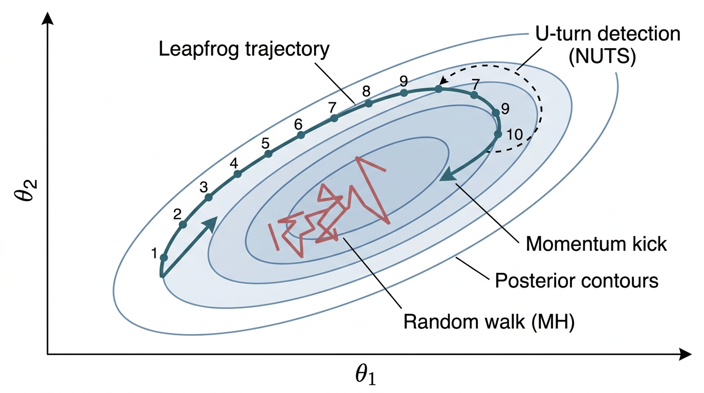

Prerequisites
This section builds directly on the model specification and prior predictive checking from Section 32.1. You should understand Bayes' theorem and the role of the marginal likelihood as a normalizing constant. Familiarity with gradient-based optimization from Chapter 26 will help with the Hamiltonian Monte Carlo and variational inference material. The Appendix A treatment of multivariate distributions provides necessary background for the geometric arguments.
The posterior \(p(\theta \mid D)\) is the answer to every Bayesian question, but computing it requires evaluating an integral that is analytically intractable for all but the simplest models. This section covers three families of approximation methods. Markov chain Monte Carlo (MCMC) methods (Metropolis-Hastings, Hamiltonian Monte Carlo or HMC, the No-U-Turn Sampler or NUTS) produce exact samples from the posterior in the limit of infinite computation. Variational inference trades exactness for speed by approximating the posterior with a simpler distribution. Normalizing flows combine the flexibility of neural networks with the theoretical guarantees of density estimation. Understanding when each method is appropriate, and how to diagnose when it has failed, is essential for trustworthy Bayesian science.
1. Markov Chain Monte Carlo Fundamentals
In drug trials, climate models, and gravitational-wave astronomy, every parameter estimate carries a credible interval that shapes real decisions; if the method that produces those intervals silently fails to explore the full posterior, the reported uncertainty is wrong and downstream choices (approve the drug, evacuate the coast, point the telescope) can be dangerously miscalibrated.
What if you could explore a probability distribution you cannot even write down in closed form, by taking a carefully designed random walk through its parameter space? MCMC does exactly that: it constructs a Markov chain whose stationary distribution (the unique probability distribution that the chain converges to regardless of its starting point) is the target posterior \(p(\theta \mid D)\), so that running the chain long enough and discarding the initial burn-in (or warm-up) period yields draws from the posterior. From those draws you can compute any quantity you need: means, medians, credible intervals, predictive distributions.
MCMC algorithms generate correlated random samples from probability distributions too complex to sample directly. The posterior in Bayesian inference almost always involves an intractable integral (the marginal likelihood \(p(D)\)). MCMC sidesteps this integral by constructing a random walk that visits regions of parameter space in proportion to their posterior probability. At each step, the sampler proposes a candidate parameter value and accepts or rejects it according to a rule that forces the chain's long-run frequencies to match the target posterior, regardless of the starting point. Use MCMC when you need calibrated uncertainty estimates and your model has fewer than roughly a thousand parameters; for larger models or when speed matters more than exactness, variational inference (covered later) is a practical alternative.
Metropolis-Hastings
The Metropolis-Hastings (MH) algorithm is the simplest MCMC method. At each step, it proposes a new parameter value \(\theta'\) from a proposal distribution \(q(\theta' \mid \theta)\) (typically a Gaussian centered on the current value), then accepts or rejects the proposal with probability:
$$\alpha = \min\left(1, \frac{p(\theta' \mid D) \, q(\theta \mid \theta')}{p(\theta \mid D) \, q(\theta' \mid \theta)}\right)$$The beauty of this formula is that the intractable normalizing constant \(p(D)\) cancels in the ratio. You only need to evaluate the unnormalized posterior \(p(D \mid \theta) \, p(\theta)\), which is the product of likelihood and prior, both of which you can compute directly. Figure 32.2.1 illustrates Hamiltonian Monte Carlo trajectory geometry.

The problem with MH is that it scales poorly with dimensionality. In high dimensions, a random-walk proposal explores the posterior very slowly because most random directions move away from the high-density region. The acceptance rate drops, the chain gets stuck, and the number of samples needed to explore the posterior grows roughly as \(O(d^2)\) in the number of dimensions \(d\). For models with more than about 10 parameters, plain MH is impractical. In short: the posterior holds every answer you need, but only if your sampler actually visits the full landscape; a chain that gets stuck delivers false confidence.
import numpy as np
def metropolis_hastings(log_posterior, theta_init, n_samples, step_size, rng):
"""Minimal Metropolis-Hastings sampler for pedagogical purposes.
Args:
log_posterior: function theta -> log p(theta | D), up to a constant
theta_init: starting parameter vector
n_samples: number of samples to draw
step_size: standard deviation of Gaussian proposal
rng: numpy random generator
Returns:
samples array of shape (n_samples, dim), acceptance rate
"""
dim = len(theta_init)
samples = np.zeros((n_samples, dim))
theta = theta_init.copy()
log_p = log_posterior(theta)
accepted = 0
for i in range(n_samples):
# Propose: random walk in parameter space
theta_proposal = theta + rng.normal(0, step_size, size=dim)
log_p_proposal = log_posterior(theta_proposal)
# Accept/reject
if np.log(rng.uniform()) < log_p_proposal - log_p:
theta = theta_proposal
log_p = log_p_proposal
accepted += 1
samples[i] = theta
return samples, accepted / n_samples
log_posterior function only needs to return the log unnormalized posterior (log-likelihood plus log-prior). The acceptance rate should be roughly 23% for optimal exploration in high dimensions (Roberts et al., 1997).Step-Through: Metropolis-Hastings on a 1D Gaussian
Trace through three MH iterations targeting a posterior \(p(\theta \mid D) \propto \exp(-\theta^2 / 2)\) (a standard normal), using a Gaussian proposal with step size 1.0. Start at \(\theta_0 = 0.5\).
Iteration 1. Current \(\theta = 0.5\), so \(\log p = -0.125\). Propose \(\theta' = 0.5 + 0.8 = 1.3\); \(\log p' = -0.845\). Log acceptance ratio: \(-0.845 - (-0.125) = -0.72\). Draw \(\log u = \log(0.31) = -1.17\). Since \(-1.17 < -0.72\), accept. New state: \(\theta = 1.3\).
Iteration 2. Current \(\theta = 1.3\), \(\log p = -0.845\). Propose \(\theta' = 1.3 + 1.5 = 2.8\); \(\log p' = -3.92\). Log acceptance ratio: \(-3.92 - (-0.845) = -3.075\). Draw \(\log u = \log(0.72) = -0.33\). Since \(-0.33 > -3.075\) is false (wait: \(-0.33\) is greater), so reject. State stays: \(\theta = 1.3\).
Iteration 3. Current \(\theta = 1.3\), \(\log p = -0.845\). Propose \(\theta' = 1.3 - 0.6 = 0.7\); \(\log p' = -0.245\). Log acceptance ratio: \(-0.245 - (-0.845) = +0.6\). Since \(0.6 > 0\), acceptance probability is \(\min(1, e^{0.6}) = 1\), so accept unconditionally. New state: \(\theta = 0.7\).
Notice the pattern: proposals moving toward the mode (iteration 3) are always accepted, while proposals moving far into the tails (iteration 2, from 1.3 to 2.8) are usually rejected. This is exactly the mechanism that makes the chain's long-run distribution match the target.
In \(d\) dimensions, a random-walk proposal with step size \(\epsilon\) moves an expected distance of \(\epsilon \sqrt{d}\) from the current point. But the typical set (the region of parameter space where most posterior mass concentrates, forming a thin shell rather than a single peak in high dimensions) has a thickness that grows much more slowly than \(\sqrt{d}\). To stay within the typical set, MH must use \(\epsilon \propto d^{-1/2}\), which means each step covers a distance proportional to \(d^{-1/2} \cdot \sqrt{d} = 1\); the chain barely moves. The number of steps needed to traverse the posterior scales as \(O(d^2)\). This is why random-walk MCMC is practical only for low-dimensional problems, and why Hamiltonian Monte Carlo was such a breakthrough.
2. Hamiltonian Monte Carlo
Hamiltonian Monte Carlo (HMC) overcomes the random-walk bottleneck by using gradient information to make proposals that follow the curvature of the posterior. Instead of proposing random perturbations, HMC simulates a physical system where the parameter vector \(\theta\) is the "position" of a particle and an auxiliary "momentum" variable \(\rho\) determines its velocity. The particle rolls along the posterior surface, naturally spending more time in high-density regions. Figure 32.2a contrasts the exploration patterns of MH and HMC on the same posterior.
Mental Model
Think of HMC as a bowling ball on a landscape sculpted from your data. The height of the terrain at each point is the negative log-posterior: valleys correspond to likely parameter values, and ridges correspond to unlikely ones. At each iteration, you give the ball a random kick (the momentum), and it rolls across the landscape according to gravity, following the contours of the valleys rather than bouncing randomly. A ball rolling downhill into a valley and up the far side naturally explores the entire basin; it covers far more ground per step than a blindfolded hiker taking small random steps (Metropolis-Hastings). The mass matrix \(M\) (a positive-definite matrix that controls how momentum maps to velocity in each parameter direction) acts like the ball's weight distribution: if you shape it to match the valley's proportions (narrow in one direction, wide in another), the ball traces out the valley efficiently instead of oscillating back and forth across the narrow axis.
The Hamiltonian (total energy) is:
$$H(\theta, \rho) = -\log p(\theta \mid D) + \frac{1}{2} \rho^T M^{-1} \rho$$The first term is the "potential energy" (the negative log-posterior) and the second is the "kinetic energy" with mass matrix \(M\). Hamilton's equations of motion define a trajectory:
$$\frac{d\theta}{dt} = M^{-1} \rho, \qquad \frac{d\rho}{dt} = \nabla_\theta \log p(\theta \mid D)$$In practice, we integrate these equations numerically using the leapfrog integrator, which preserves the symplectic structure of the Hamiltonian system (volume preservation and time reversibility). These properties guarantee that the Metropolis acceptance probability remains high even for large steps in parameter space.
def leapfrog(theta, rho, grad_log_posterior, step_size, n_steps):
"""Leapfrog integrator for Hamiltonian dynamics.
The leapfrog scheme alternates half-steps in momentum with full steps
in position, preserving the symplectic structure of Hamilton's equations.
"""
rho = rho + 0.5 * step_size * grad_log_posterior(theta) # half-step momentum
for _ in range(n_steps - 1):
theta = theta + step_size * rho # full-step position
rho = rho + step_size * grad_log_posterior(theta) # full-step momentum
theta = theta + step_size * rho # final position step
rho = rho + 0.5 * step_size * grad_log_posterior(theta) # final half-step momentum
return theta, -rho # negate momentum for reversibility
def hmc_step(theta, log_posterior, grad_log_posterior, step_size, n_steps, rng):
"""One Hamiltonian Monte Carlo transition."""
dim = len(theta)
rho = rng.normal(size=dim) # sample momentum
theta_new, rho_new = leapfrog(
theta.copy(), rho.copy(), grad_log_posterior, step_size, n_steps
)
# Metropolis correction for numerical integration error
current_H = -log_posterior(theta) + 0.5 * np.dot(rho, rho)
proposed_H = -log_posterior(theta_new) + 0.5 * np.dot(rho_new, rho_new)
if np.log(rng.uniform()) < current_H - proposed_H:
return theta_new, True
return theta, False
HMC has two tuning parameters: the step size \(\epsilon\) and the number of leapfrog steps \(L\). The product \(\epsilon L\) determines the total trajectory length. Too short a trajectory and HMC degenerates to a random walk. Too long and the trajectory doubles back on itself, wasting computation. Both parameters require careful tuning, which motivates the NUTS algorithm.
3. The NUTS Sampler: Geometry and Intuition
The No-U-Turn Sampler (NUTS), introduced by Hoffman and Gelman (2014), eliminates the need to choose the trajectory length \(L\) by automatically detecting when the trajectory starts to double back. The name comes from its stopping criterion: NUTS extends the trajectory in both directions (using a binary tree of leapfrog steps, where each level of the tree doubles the trajectory length by appending new leapfrog segments in both the forward and backward directions) until it makes a "U-turn," meaning the trajectory starts moving back toward its starting point.
The geometric intuition is elegant. In the Hamiltonian system, the particle follows a curved path through parameter space. On a well-conditioned posterior (roughly ellipsoidal), this path traces out an arc that covers a large portion of the posterior before returning to the neighborhood of its starting point. NUTS detects the moment the arc starts to close and stops there, giving you a proposal that has traveled as far as possible without wasting computation on the return trip.
Consider a model with two parameters that have a posterior correlation of 0.95. A random-walk MH sampler would typically need on the order of 400 times more samples than NUTS to achieve the same effective sample size, because each MH step can only move a tiny distance along the narrow ridge of the correlated posterior. NUTS, by following the Hamiltonian trajectory along the ridge, covers the entire posterior in a handful of steps. In PyMC, NUTS is the default sampler, and you typically never need to change it. The framework automatically tunes the step size during warm-up to achieve a target acceptance rate of 0.8 and adapts the mass matrix to the posterior geometry.
import pymc as pm
import arviz as az
import numpy as np
# A model with a highly correlated posterior
rng = np.random.default_rng(42)
n = 50
x = rng.normal(0, 1, size=n)
y = 2.5 * x + 1.0 * (x ** 2) + rng.normal(0, 0.5, size=n)
with pm.Model() as correlated_model:
beta_0 = pm.Normal("beta_0", mu=0, sigma=5)
beta_1 = pm.Normal("beta_1", mu=0, sigma=5)
beta_2 = pm.Normal("beta_2", mu=0, sigma=5)
sigma = pm.HalfNormal("sigma", sigma=2)
mu = beta_0 + beta_1 * x + beta_2 * x**2
pm.Normal("y_obs", mu=mu, sigma=sigma, observed=y)
# NUTS is the default; these settings are for illustration
trace = pm.sample(
draws=2000,
tune=1000,
chains=4,
target_accept=0.9, # raise for difficult geometries
random_seed=42,
)
# Convergence diagnostics
print(az.summary(trace, var_names=["beta_0", "beta_1", "beta_2", "sigma"]))
# Pair plot reveals the posterior correlation structure
az.plot_pair(trace, var_names=["beta_1", "beta_2"], kind="kde")
target_accept=0.9 setting tells PyMC to use smaller step sizes for more accurate trajectories, useful when the posterior has strong correlations or funnel geometries. The pair plot reveals the posterior correlation between beta_1 and beta_2.4. Diagnosing MCMC: R-hat, ESS, and Divergences
MCMC gives you draws that are approximately from the posterior, and the quality of that approximation depends on whether the chain has converged and mixed well. Three diagnostics are essential.
R-hat (\(\hat{R}\)) compares the variance within chains to the variance between chains. If all chains have converged to the same distribution, \(\hat{R} \approx 1.0\). Values above 1.01 indicate that chains are exploring different regions of parameter space and have not yet converged. The split-\(\hat{R}\) variant (Vehtari et al., 2021) also checks for stationarity within each chain by splitting it in half.
Effective sample size (ESS) accounts for autocorrelation between successive MCMC samples. If each sample were independent, 4000 draws from 4 chains would give you 4000 effective samples. In practice, autocorrelation reduces this. An ESS below 400 is a warning sign; below 100 means the posterior summaries are unreliable. The bulk ESS measures the efficiency of exploring the center of the posterior, while the tail ESS measures the efficiency of exploring the tails (important for credible intervals).
Common Misconception
A frequent mistake is to assume that drawing more raw MCMC samples automatically improves inference quality. In reality, what matters is the effective sample size (ESS), not the raw count. A chain of 100,000 highly autocorrelated samples can carry less information than 1,000 nearly independent ones. If your sampler is mixing poorly (for example, because of a difficult posterior geometry), simply running it longer wastes computation without meaningfully reducing uncertainty in your estimates. The correct response to low ESS is to fix the sampler (reparameterize the model, tune the step size, or switch to a better algorithm like NUTS), not to collect more correlated draws.
Divergences are NUTS-specific warnings that occur when the leapfrog
integrator fails to accurately follow the Hamiltonian trajectory, typically because
the posterior has sharp curvature (funnels, ridges, or multimodal regions). A single
divergence is a warning; many divergences mean the posterior approximation is
unreliable. The fix is usually to reparameterize the model (centered vs. non-centered
parameterizations for hierarchical models) or increase target_accept.
import arviz as az
def diagnose_trace(trace, var_names=None):
"""Comprehensive MCMC diagnostic report."""
summary = az.summary(trace, var_names=var_names)
# Check R-hat
rhat_issues = summary[summary["r_hat"] > 1.01]
if len(rhat_issues) > 0:
print("WARNING: R-hat > 1.01 for:")
print(rhat_issues[["r_hat"]])
else:
print("R-hat: all parameters < 1.01 (good)")
# Check ESS
low_ess = summary[summary["ess_bulk"] < 400]
if len(low_ess) > 0:
print("\nWARNING: Low bulk ESS for:")
print(low_ess[["ess_bulk", "ess_tail"]])
else:
print(f"ESS: minimum bulk ESS = {summary['ess_bulk'].min():.0f} (good)")
# Check divergences (PyMC stores these in the sample stats)
if hasattr(trace, "sample_stats"):
n_div = int(trace.sample_stats["diverging"].sum())
if n_div > 0:
print(f"\nWARNING: {n_div} divergent transitions detected!")
print("Consider reparameterizing or increasing target_accept.")
else:
print("Divergences: 0 (good)")
return summary
# Use it
summary = diagnose_trace(trace, var_names=["beta_0", "beta_1", "beta_2", "sigma"])
The diagnostic function above reimplements what ArviZ provides out of the box.
az.summary(trace) includes R-hat, ESS (bulk and tail), mean, standard
deviation, and HDI in a single DataFrame. az.plot_trace(trace) produces
trace plots and posterior density plots side by side. az.plot_energy(trace)
visualizes the energy transition distribution, which detects problems that R-hat can
miss. The manual implementation above takes roughly 30 lines; the ArviZ equivalents
are each a single function call. For production work, always use ArviZ.
5. Variational Inference
Convergence diagnostics tell you whether MCMC has worked, but they cannot solve MCMC's deeper limitation: for large models or tight computational budgets, sampling may be too slow.
Variational inference (VI) takes a fundamentally different approach from MCMC. Instead of sampling from the posterior, VI approximates the posterior with a simpler distribution \(q(\theta; \phi)\) (the variational distribution) and optimizes the parameters \(\phi\) to make \(q\) as close to the true posterior as possible. The closeness measure is the Kullback-Leibler (KL) divergence, where KL divergence quantifies how much one probability distribution differs from another (zero when they match exactly, larger as they diverge):
Minimizing this KL divergence is equivalent to maximizing the evidence lower bound (ELBO):
$$\text{ELBO}(\phi) = \mathbb{E}_{q(\theta; \phi)}[\log p(D \mid \theta) + \log p(\theta) - \log q(\theta; \phi)]$$Checkpoint
So far: variational inference replaces sampling with optimization by choosing a simple approximation \(q(\theta; \phi)\), measuring its distance from the true posterior via KL divergence, and maximizing the equivalent ELBO objective, which avoids computing the intractable normalizing constant.
From KL Divergence to the ELBO
The ELBO is a lower bound on \(\log p(D)\), the log marginal likelihood. Maximizing it simultaneously pushes \(q\) toward the posterior and provides an approximation to the model evidence, which is useful for model comparison (Section 32.3).
Automatic Differentiation Variational Inference (ADVI), implemented in PyMC, uses a mean-field Gaussian approximation (where "mean-field" means each parameter is given its own independent distribution, ignoring correlations between parameters): $q(\theta; \phi) = \prod_i \text{Normal}(\mu_i, \sigma_i^2)$. The optimizer finds the best \(\mu_i\) and \(\sigma_i\) for each. ADVI transforms constrained parameters (positive, bounded) to the unconstrained real line, applies the mean-field approximation, and transforms back. This is fast (seconds to minutes for models that take MCMC hours) but comes with a fundamental limitation: the mean-field approximation cannot capture correlations between parameters.
import pymc as pm
import arviz as az
with correlated_model:
# Variational inference with ADVI
approx = pm.fit(
method="advi",
n=30000, # optimization iterations
random_seed=42,
)
# Draw samples from the variational approximation
vi_trace = approx.sample(2000)
# Compare VI and MCMC posteriors
print("MCMC posterior means:")
print(az.summary(trace, var_names=["beta_1", "beta_2"])[["mean", "sd"]])
print("\nADVI posterior means:")
print(az.summary(vi_trace, var_names=["beta_1", "beta_2"])[["mean", "sd"]])
pm.fit call optimizes variational parameters over 30,000 iterations. Comparing the standard deviations from ADVI and NUTS reveals where the mean-field approximation underestimates uncertainty.
Diagnosing VI convergence. Unlike MCMC, variational inference has no
R-hat or ESS equivalent. Instead, monitor the ELBO trace (the value of the objective
at each optimization step): a converged run shows the ELBO plateauing with small
fluctuations. If the ELBO is still climbing when optimization stops, increase
n. If it oscillates wildly, reduce the learning rate. Most importantly,
compare VI posteriors against a short MCMC run on at least one representative model
configuration; if the credible intervals differ substantially, the variational
approximation is too restrictive for your problem.
The mean-field approximation in ADVI always underestimates posterior uncertainty
because it forces the variational distribution to be a product of independent
Gaussians. If the true posterior has strong correlations (common in regression models,
hierarchical models, and any model with confounded parameters), ADVI will report
narrower credible intervals than the truth. For scientific applications where
calibrated uncertainty is critical, this systematic bias is dangerous. Use ADVI as a
fast initialization or screening tool, but always validate the results with MCMC on
your final model. Full-rank ADVI (method="fullrank_advi" in PyMC) can
capture correlations but scales as \(O(d^2)\) in the number of parameters.
6. Normalizing Flows for Posterior Inference
Mean-field VI sacrifices correlation structure for speed, and full-rank VI recovers correlations but cannot represent multimodality; a more expressive variational family is needed to close that gap.
Normalizing flows offer a middle ground between the exactness of MCMC and the speed of VI. A normalizing flow is an invertible neural network $f_\phi: \mathbb{R}^d \to \mathbb{R}^d$ that transforms a simple base distribution (usually a standard Gaussian) into a complex target distribution. The change-of-variables formula (which relates the density of a transformed random variable to the original density scaled by the Jacobian determinant of the transformation) gives the density of the transformed distribution:
$$q(\theta; \phi) = p_{\text{base}}(f_\phi^{-1}(\theta)) \left| \det \frac{\partial f_\phi^{-1}}{\partial \theta} \right|$$Because the transformation is a neural network, normalizing flows can represent posteriors with correlations, multimodality, and other complex structures that mean-field VI cannot capture. Training proceeds by maximizing the ELBO, just as in VI, but with a much more expressive variational family.
The flowMC library (Wong et al., 2023) combines normalizing flows with MCMC: it trains a flow to approximate the posterior, then uses that flow as a global proposal distribution for MCMC sampling. The flow provides efficient long-range proposals; the MCMC correction preserves asymptotic exactness. This combination handles multimodal posteriors in astrophysics, gravitational-wave inference, and cosmological parameter estimation.
import jax
import jax.numpy as jnp
from flowMC.sampler.MALA import MALA
from flowMC.sampler.Sampler import Sampler
from flowMC.nfmodel.rqspline import MaskedCouplingRQSpline
def log_posterior_jax(theta, data):
"""Log-posterior for a simple model, JAX-compatible."""
x, y = data
beta_0, beta_1, log_sigma = theta[0], theta[1], theta[2]
sigma = jnp.exp(log_sigma)
mu = beta_0 + beta_1 * x
# Log-likelihood (Normal)
ll = -0.5 * jnp.sum(((y - mu) / sigma)**2) - n * jnp.log(sigma)
# Log-prior (weakly informative)
lp = -0.5 * (beta_0**2 / 100 + beta_1**2 / 100 + log_sigma**2 / 4)
return ll + lp
# Set up the normalizing flow model
n_dim = 3
n_layers = 4
key = jax.random.PRNGKey(42)
# Rational quadratic spline flow (expressive, stable)
flow_model = MaskedCouplingRQSpline(
n_features=n_dim,
n_layers=n_layers,
hidden_sizes=[64, 64],
num_bins=8,
key=key,
)
# Local sampler for the MCMC phase
local_sampler = MALA(log_posterior_jax, True, {"step_size": 0.01})
# Combined flow + MCMC sampler
sampler = Sampler(
n_dim=n_dim,
rng_key_set=jax.random.split(key, 3),
local_sampler=local_sampler,
nf_model=flow_model,
n_local_steps=50, # local MCMC steps per iteration
n_global_steps=50, # flow-based global steps per iteration
n_epochs=30, # flow training epochs
n_chains=10,
)
Beyond normalizing flows, diffusion models have emerged as a powerful
new class of posterior samplers. Sharrock et al. (2024) introduced
Sequential Neural Posterior Score Estimation (SNPSE), which uses score-based
diffusion to learn the posterior in simulation-based inference settings, achieving
state-of-the-art performance on high-dimensional benchmarks where normalizing flows
struggle. Separately, Vargas et al. (2023) proposed Denoising Diffusion Samplers
(DDS), which frame MCMC itself as a denoising diffusion process, enabling sampling from
unnormalized densities without the architectural constraints of invertible flows. These
diffusion-based approaches in early benchmarks, handle posteriors with 50 to 100+ dimensions more reliably
than spline flows and are beginning to appear in production pipelines for gravitational-wave
astronomy and protein structure inference. The sbi Python package (v0.22+)
now includes diffusion-based estimators alongside its original flow-based methods.
Real-World Application: Gravitational-Wave Parameter Estimation
The LIGO/Virgo collaboration uses flowMC and the Jim library (built on flowMC) to infer the masses, spins, and sky locations of merging black holes from gravitational-wave signals. Each event requires sampling a 15-dimensional posterior with strong correlations and occasional multimodality. Traditional NUTS runs took days per event; flow-enhanced MCMC in Jim reduces this to roughly 30 minutes on a single GPU, enabling near-real-time alerts to electromagnetic telescope networks for follow-up observations.
7. Choosing an Inference Method
The choice of inference method depends on the model complexity, the number of parameters, the posterior geometry, and the computational budget. Table 32.2 summarizes the trade-offs.
| Method | Exactness | Speed | Scales to | Handles Multimodality | Best For |
|---|---|---|---|---|---|
| Metropolis-Hastings | Exact (asymptotic) | Slow | ~10 params | Poorly | Low-dimensional, pedagogical |
| NUTS (HMC) | Exact (asymptotic) | Moderate | ~1000 params | Poorly | Most scientific models |
| Mean-field ADVI | Approximate | Fast | ~10,000 params | No | Screening, initialization |
| Full-rank ADVI | Approximate | Moderate | ~1000 params | No | Correlated posteriors, fast |
| Normalizing flows | Approximate / exact* | Moderate | ~100 params | Yes | Multimodal, complex geometry |
| flowMC (flow + MCMC) | Exact (asymptotic) | Moderate | ~100 params | Yes | Astrophysics, multimodal |
For most scientific Bayesian models (10 to a few hundred parameters, unimodal posterior, need for calibrated uncertainty), NUTS is the default recommendation. It is the default in PyMC, Stan, and NumPyro, and it works well out of the box for the vast majority of models encountered in practice. Use ADVI as a fast screening tool when you are iterating on model structure and do not yet need precise posteriors. Use normalizing flows or flowMC when your posterior is multimodal or when you need amortized inference (where a single trained model can produce posterior samples for new datasets without rerunning the full inference procedure) across many datasets.
NumPyro, the JAX-based probabilistic programming framework, runs NUTS on GPU
hardware. For models with many observations or parameters, this can, depending on model size and data volume, provide a 10x to
100x speedup over PyMC (which runs on CPU by default through PyTensor). The API is
similar to PyMC, making the transition straightforward. If your MCMC run takes hours
in PyMC, try NumPyro. As of 2024, PyMC itself also supports faster backends
via the nutpie sampler, which uses a Rust-based NUTS implementation and
can optionally compile models to JAX or NumPy, narrowing the speed gap with NumPyro
for many workloads. We use NumPyro for the full recipe in
Section 32.4.
Lab: MCMC Mixing and Dimensionality
Goal: Observe how random-walk Metropolis-Hastings mixing degrades as dimensionality increases, and compare with HMC on the same targets.
Tools: Python with numpy, matplotlib, and arviz (for ESS computation via az.ess()).
Procedure (20 minutes): Using the MH sampler code from this section, sample from an uncorrelated \(d\)-dimensional standard Gaussian for \(d \in \{2, 5, 10, 20, 50\}\). For each dimension, run 10,000 iterations with a proposal step size of \(2.4 / \sqrt{d}\) (the theoretically optimal scaling). Record the acceptance rate and compute the bulk ESS per dimension using ArviZ. Then implement the HMC sampler from this section and repeat the experiment with 10 leapfrog steps and step size \(0.1\).
What to vary: The dimensionality \(d\). Optionally, also vary the proposal step size for MH to verify that \(2.4 / \sqrt{d}\) is indeed near-optimal.
What to observe: Plot ESS per gradient evaluation (MH uses zero gradients; HMC uses \(L\) per step) against \(d\). You should see MH's ESS per sample drop roughly as \(1/d\), while HMC's ESS per gradient evaluation remains nearly constant. This is the empirical signature of HMC's \(O(d^{5/4})\) scaling advantage over MH's \(O(d^2)\).
Try It: Compare MCMC and VI on a Banana-Shaped Posterior
This mini-project lets you see, hands-on, where mean-field VI fails and NUTS succeeds.
You need only numpy, pymc, arviz, and matplotlib.
Step 1. Generate synthetic data from a nonlinear model:
y_i = \theta_1 \cdot \theta_2 + \epsilon_i with \(\epsilon_i \sim \text{Normal}(0, 0.5)\),
\(n = 30\) observations. This product parameterization creates a banana-shaped (curved, correlated)
posterior because many \((\theta_1, \theta_2)\) pairs can produce the same product.
Step 2. Build a PyMC model with Normal priors on both \(\theta_1\)
and \(\theta_2\) (mean 0, standard deviation 5) and the multiplicative likelihood above.
Sample using NUTS with 4 chains and 2,000 draws each.
Step 3. Fit the same model using pm.fit(method="advi", n=50000)
and draw 4,000 samples from the variational approximation.
Step 4. Plot both sets of samples as a 2D scatter (or KDE contour) of
\(\theta_1\) vs. \(\theta_2\) on the same axes using matplotlib. You should see
the NUTS samples tracing a curved banana shape while the ADVI samples form a compact ellipse
that misses the tails of the true posterior.
Step 5. Compute and compare the 94% highest-density intervals (HDI) for the
product \(\theta_1 \cdot \theta_2\) from both methods using az.hdi(). Verify that
the ADVI interval is narrower (underestimates uncertainty) while the NUTS interval covers
the true generating value.
Exercise 32.2.1
You run NUTS on a hierarchical model with 4 chains of 2,000 draws each. The summary reports \(\hat{R} = 1.002\) and bulk ESS = 3,200 for all parameters, but you see 47 divergent transitions. A colleague says: "R-hat and ESS look fine, so the results are trustworthy." Is your colleague correct? What specifically could the divergences indicate about the posterior, and what two concrete actions should you try first to eliminate them?
Hint
Divergences signal that the leapfrog integrator encountered regions of high curvature it could not track accurately. Even with good R-hat and ESS, the sampler may be systematically avoiding a region of the posterior (such as the neck of a funnel geometry), producing biased estimates. The two standard remedies involve adjustingtarget_accept and reparameterizing hierarchical parameters from centered to non-centered form.
Exercises
- (Conceptual) Explain why the leapfrog integrator must be both time-reversible and volume-preserving (symplectic) for HMC to satisfy detailed balance (the condition requiring that the probability of transitioning from state A to state B equals the probability of transitioning from B to A under the stationary distribution). What would go wrong if we used a standard Euler integrator instead? Hint: consider what happens to the acceptance probability.
- (Coding) Implement the Metropolis-Hastings sampler from this section and use it to sample from a 2D Gaussian posterior with correlation 0.9. Measure the effective sample size as a function of the proposal step size. Then repeat with HMC (using the leapfrog code provided). Compare ESS per gradient evaluation for MH and HMC. At what dimensionality does HMC become clearly superior?
-
(Analysis) Take the quadratic regression model from this section and fit it with both NUTS and mean-field ADVI. Compare the posterior credible intervals for \(\beta_1\) and \(\beta_2\) from both methods. Plot the ADVI posterior as a 2D contour overlaid on the NUTS posterior samples. Where does ADVI misrepresent the posterior? How does the mismatch change if you switch to
fullrank_advi?
What's Next
We now have the computational machinery to compute posteriors. But having a posterior is only half the story. In Section 32.3: Model Comparison and Decision Making, we use posteriors to answer the questions that matter most for discovery: which of several competing hypotheses does the data support? Is the model well-calibrated? And, given limited resources, which experiment should we run next?
Bibliography
The best introduction to HMC geometry, explaining the typical set, energy conservation, and the role of the mass matrix.
The NUTS paper that automated trajectory-length tuning in HMC.
Comprehensive review of variational inference connecting it to classical statistics.
The flowMC library combining normalizing flows with MCMC for multimodal posteriors.
Comprehensive survey of normalizing flow architectures and their applications to Bayesian inference.
The modern R-hat diagnostic with rank normalization, now default in ArviZ and Stan.